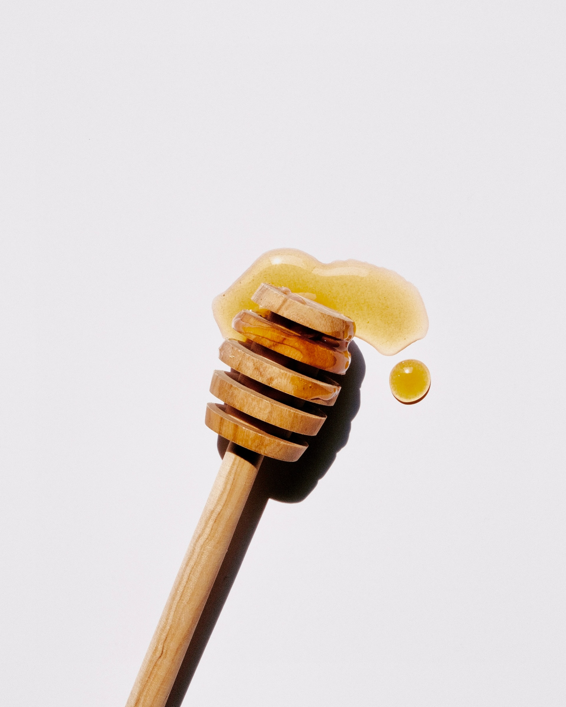

Свежий мед

Краткое описание:
- Натуральный продукт 2023 года
- Доставка прямо с пасеки
- Выгодный товар по привлекательной цене
Условия доставки:
- Почтовой службой по России
- от 5000 рублей — бесплатно
- Экспресс-доставка на такси по Барнаулу
цена:1000 р
В наличии
Сотовый мед считается более ценным, чем выкачанный. Причина — в его составе. Помимо самого меда, он также включает частички воска, прополиса, пыльцы и перги. За счет этого он дольше остается жидким. Кроме того, продукт почти невозможно подделать — Вы можете легко убедиться в его натуральности и зрелости благодаря запечатанным белесыми «крышечками» ячейкам. Именно вышеперечисленным объясняется более высокая цена сотового меда.
Характеристики:
- Цвет: Желтый
- Вкус: Сладкий
- Запах: Насыщенный медовый
- Консистенция: Мелкозернистая
- Период кристаллизации: 3 месяца
Пищевая и энергетическая ценность:
- Углеводы: 95%
- Белки: 5%
- Жиры: 0%
- Калорийность: 325 ккал/100 г